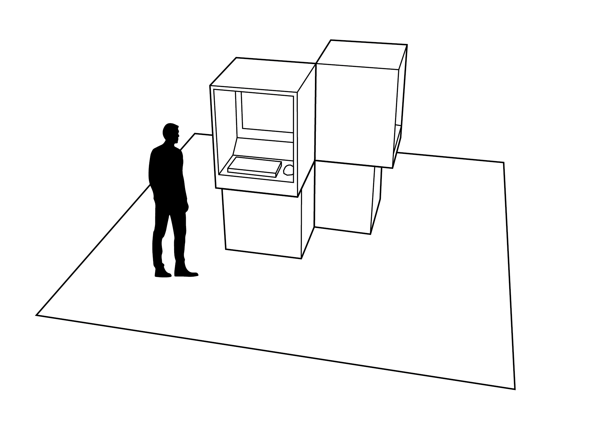
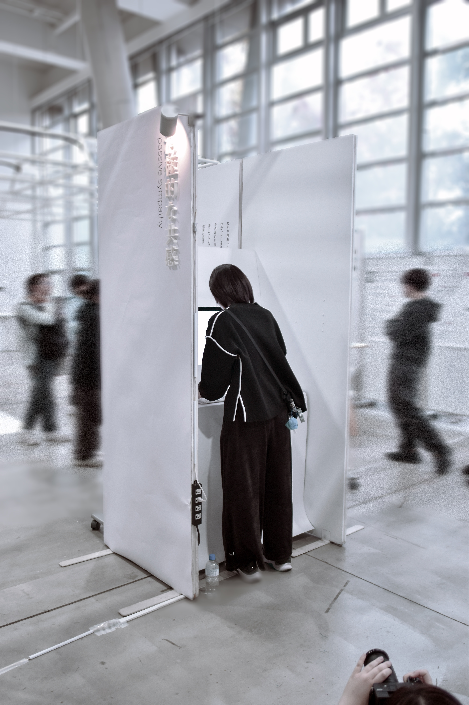

background
作品の制作フロー/ アイデアから展示まで
「異なる立場や感覚を持つ人々がどう共に居られるか？」
心地いい空間
- ・youtubeのコメ欄
- ・引用ツイート
- ・オンライン線香花火
- ・切り抜き
- ・No context meme
キーワード
温度差
疲れる空間
- ・スポーツ観戦
- ・本配信
- ・アットホームな
バイト
キーワード
同じ
→
心地いい空間のキーワードから
"一緒の時間を過ごすこと”を、 特別な目的もなく共有する空間
=消極的な共感と定義する
=消極的な共感と定義する
research
消極的な共感を感じさせるためのアイデアフロー
01
既存のもので近い体験を探る
身の回りや体験から表現を探る
身の回りや体験から表現を探る
- 1999展 考察匿名ノート(カフェ)
- 谷川俊太郎 すき・好きノート
- 付箋を貼る壁
- 愚痴壺
- 机に落書きできるイベント
02
あるモノから流れを組み合わせて
新しいものを考える。
新しいものを考える。
「自分の意図や思想がどこかで重なる
体験を作りたい。」という目的を設定する。どのように簡単にその場で体験させるか方法を既存の近い体験や表現の要素などから模索した。
03
リサーチの中で
人がいない最小単位で構成されたSNSのタイムラインの作品をXで見つける。
人がいない最小単位で構成されたSNSのタイムラインの作品をXで見つける。
そこから
消極的な共感も相手がいなくても
感じられるのではないか（bot的な）
という問いが生まれた。それを元に最小限の体験の
プロトタイプをp5jsで作った。
feedback
- （自分が打った言葉がこだまのように増えていく プロトタイプに対して）自己対話みたい
- 他の人が打った言葉も出てきて独り言が混ざる感じに しても面白そう
- 「教室とかで「お腹すいた〜」みたいな独り言 お互いに話してないけど、共感する時あるよね」
- 「snsって人がいて欲しくないけどいて欲しいみたいに 思う時もあるprototype02は言葉が反復されることでいないんだけど存在感を感じて面白い
prototype02が好評。展示空間も考えつつ、体験を改善。
prototype02をもとに展示空間設計を進める。
prototype02をもとに展示空間設計を進める。
system
node.jsを使って二つのPCを同じwifiに繋いで同期させる。
prototype02に他者が入力した言葉もリアルタイムで ながれてくる機能を追加した。
打ったテキストが音と共にこだまし、カーソルを 生き物のように避けることで存在感を強調した。
以前打ったテキストも含めてランダムで増殖することで 自身が打った言葉が他者の言葉のようにも感じられるように。
prototype02に他者が入力した言葉もリアルタイムで ながれてくる機能を追加した。
打ったテキストが音と共にこだまし、カーソルを 生き物のように避けることで存在感を強調した。
以前打ったテキストも含めてランダムで増殖することで 自身が打った言葉が他者の言葉のようにも感じられるように。
sketch
-
01
 展示の仕組みを考えるための什器のスケッチ
展示の仕組みを考えるための什器のスケッチ -
02

 鑑賞者の行動も考えてスケッチした方がいいとアドバイスをもらう
鑑賞者の行動も考えてスケッチした方がいいとアドバイスをもらう -
03


 アドバイスをもとに様々な体験を考え、比較
アドバイスをもとに様々な体験を考え、比較 -
04


 借用できる機材、実際の展示空間をもとに設計していく
借用できる機材、実際の展示空間をもとに設計していく
exhibition



今回の展示では伝えることではなく、感じさせることを目標にしました。
そのため体験をメインに空間作りを工夫しました。
互いの存在があるかないかわからない距離感を作るために対角線上に二つの什器を配置。
箱に囲まれて操作することでスマホの箱の中のような一人の空間を作成。
タイトルやステートメントは箱の側面に配置し、概要を見てスムーズに体験の場にいけるような設計にしました。
箱に囲まれて操作することでスマホの箱の中のような一人の空間を作成。
タイトルやステートメントは箱の側面に配置し、概要を見てスムーズに体験の場にいけるような設計にしました。
review
- ・音が
作品に 合ってて いいな と 感じ ました。 相手 が 見え ない 設営 の 構造 も 素敵 です。 - ・見づらい
タイトル で 消極的 を 表現 してる の が 面白い。 - ・コンセプト
と 展示 の 内容 が 凄く 合って いて 伝わって きま した。 質問 の 文字 が 残る だけ で 誰か から 詳しく 言及 される 訳 でも ない と いう の が、 他者 の 存在 を 感じる ところ の 塩梅 と して とても いいな と 思い ます。 - ・双方
の ことば が 響き 会う 様子 が 文字 の 動き や 音 で 魅力的 に 表現 されて いて、 「消極的」 と いう 一見 マイナス な 側面 に 感じ られる もの が、 なんだか よい もの に 思えた。 空間 自体 も かなり オリジナリティー が あって 目 を 引く、 白 の 統一感 も 美しい。 - ・共感
の部分 が 感じ ずら かった 印象 でした。 共感 できる 文字 が タップ できて、 文字 の 表示 が 大きく なる 的 な 共感 の 構築 が 欲し い な と 感じ ました。
comment
作品展示という実際の場での体験を意識し、デジタル作品でありながら、その場でしか感じられない体験をどう作るか試行錯誤した作品でした。実際に展示してみると会場は天井まで吹き抜けだったので、作品の音が別の場所にいてもどこからか聞こえ、存在を匂わせてきました。それはテーマである「消極的な共感」らしく意図していない現象でしたが、面白かったです。展示は実際にしてみないとわからない制御しきれなさが良いですね。作品自体はプロトタイプを作るまではかなり難航していました。「無理にわかり合おうとしなくても、どうしてもわかってしまうもの。自身を保ったまま他者と共鳴できる空間は心地がいい」というテーマ自体は良かったのですが、それをどう表現すべきか苦戦していました。そんな時偶然、タイムラインでコンテンツに内容がなかったとしてもSNSは面白いという
体験型作品 ※1を見て、必ずしもコミュニケーションは相手がいる必要がないというジャンプのおかげでプロトタイプを作ることができ、方向性を定めることができました。まさか現実逃避のネットサーフィンからヒントを得ることができるとは！
コーディングではChat-gptとGeminiを重宝しました。テキストで指示した通りにコードが返ってくるの